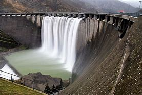
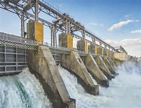
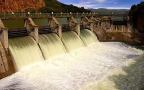

¿Qué es la energía hidráulica?
La energía hidráulica se obtiene del movimiento del agua, generalmente a través de presas y ríos. Se utiliza para generar electricidad mediante turbinas.
La energía hidráulica es una forma de energía renovable que se obtiene a partir del movimiento y la presión del agua. Esta fuente de energía se utiliza principalmente para generar electricidad, aprovechando la energía cinética y potencial del agua en movimiento, especialmente en ríos y presas.
Principios de Funcionamiento
 Energía Potencial: El agua almacenada en represas o embalses tiene energía potencial debido a su altura. Cuando se libera, esta energía se convierte en energía cinética a medida que el agua desciende.Generación de Electricidad Represas: En una planta hidroeléctrica, el agua se canaliza a través de una presa. Al caer, mueve turbinas conectadas a generadores eléctricos.
Turbinas: El movimiento del agua hace girar las turbinas, que, a su vez, activan generadores para producir electricidad.

Tipos de Energía Hidráulica
1.Hidroeléctrica:Grandes Centrales: Plantas que utilizan grandes represas para almacenar grandes volúmenes de agua y generar electricidad a gran escala.
Pequeñas Centrales: También conocidas como microhidroeléctricas, utilizan flujos de agua más pequeños y son ideales para comunidades remotas.
2.Energía Mareomotriz:
Aprovecha el movimiento de las mareas y las olas para generar electricidad. Aunque menos común, es una fuente emergente de energía renovable.
Ventajas
Renovable y Sostenible: La energía hidráulica es inagotable mientras existan ríos y cuerpos de agua.Bajas Emisiones: La generación de electricidad a partir de la energía hidráulica produce mínimas emisiones de gases de efecto invernadero.
Almacenamiento de Energía: Las plantas hidroeléctricas pueden ajustarse rápidamente a la demanda, funcionando como un sistema de almacenamiento de energía.
Desafíos
Impacto Ambiental: La construcción de represas puede afectar ecosistemas locales, la migración de peces y el paisaje.Dependencia de la Hidrología: La generación de energía hidráulica puede verse afectada por sequías o cambios en los patrones de precipitación.
Costos de Infraestructura: La construcción y el mantenimiento de represas y sistemas hidráulicos pueden ser costosos.